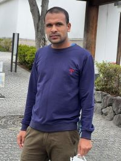

|

Sabin Khanal
801-1 Fukakusa Ijishokucho,Fushimi-ku Ward, Kyoto, 612-0028
Contact No.:080 6042 2326
|
Personal Information
- Date of Birth : December 08, 1994
- Birth Place : Changunarayan Bhaktapur, Nepal
- Email : sabinkhanal73@gmail.com
- Father's Name : Shambhu Prasad Khanal
- Mother's Name : Indu Khanal
- Gender : Male
- Nationality : Nepalese
- Religion : Hindu
- Marital status:Single
|
Hobbies
- Explore new places
- Playing and watching cricket
- Reading Story Books
- Listening Music
|
Academic Qualification
- Bachelor Degree
- Kantipur International College,Kathmandu,Nepal
- Higher Secondary School
- Basu Higher Secondary School,Bhaktapur, Nepal
- School Leaving Certificate
- Basu Higher Secondary School, Bhaktapur, Nepal
|
Work Experience
- Waterfront Resort By KGH ( Work as Night Auditor) )Pokhara, Nepal
- Grand Hotel Kathmandu ( Work as Cashier ) Kathmandu Nepal.
|